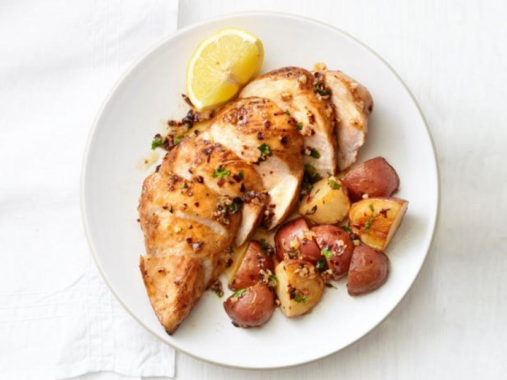

Garlic Chicken and Potato Recipe

Ingredients
- 2 lbs small red-skinned potatoes, quartered
- 3 tbsp extra-virgin olive oil
- 1/2 tsp cumin seeds(optional)
- Salt and pepper
- 4 cloves garlic, finely chopped
- 2 tbsp light brown sugar
- 1 lemon
- Pinch of red pepper flakes
- 4 skinless, bonesless chicken breasts
- 2 tbsp chopped fresh cilantro or parsley
Steps
- Preheat oven to 425 degrees F. Toss the potatoes with 1 tablespoon olive oil,
the cumin seeds, 3/4 teaspoon salt, and pepper to taste. Spread in a large baking dish
and roast until the potatoes begin to brown, 25 to 30 minutes.
- Meanwhile, heat the remaining 2 tablespoons olive oil in a small skillet over medium heat.
Add the garlic and cook, stirring frequently, until lightly golden, about 2 minutes.
Remove from the heat and stir in the brown sugar, lemon juice and red pepper flakes.
Remove the baking dish from the oven, push the potatoes to the sides and arrange the chicken breasts in the middle.
Season the chicken with salt and drizzle with the garlic mixture. Return to the oven and bake until the chicken is cooked
through and the potatoes are tender, about 20 minutes.
- Remove from the oven; transfer the chicken to a cutting board and slice. Add the cilantro to the baking dish and toss with the potatoes.
Serve the chicken with the potatoes and lemon wedges. Drizzle with the pan juices.